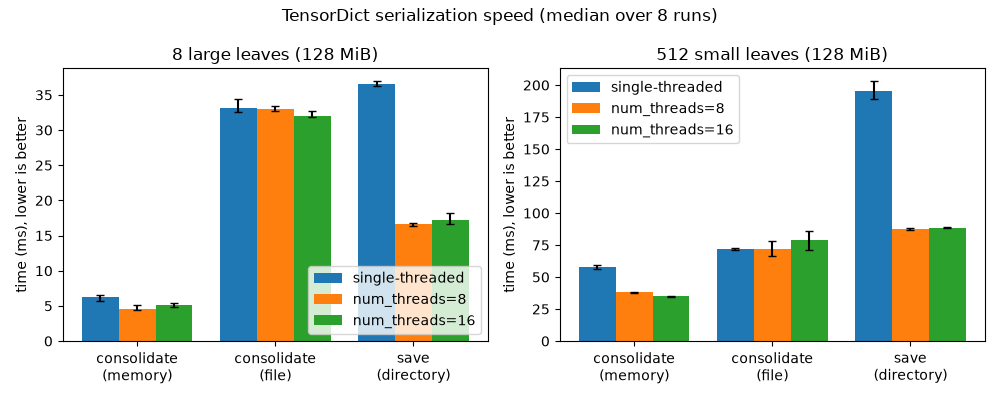

Note
Go to the end to download the full example code.
Benchmarking TensorDict serialization speed#
Author: Vincent Moens
The fastest way to save a tensordict depends on its layout and on your
storage. This script times the write paths and the on-disk formats of
tensordict against torch.save, safetensors, and zarr, and plots the
results. It is for readers who choose a format for checkpoints or datasets.
What you will learn:
How the write paths of tensordict compare, and how
num_threadsaffects each of them.How the on-disk formats compare on save time and open time.
How to run the same benchmark on your own hardware.
The documentation build runs the script, so the figures below come from the
machine that built these docs. To measure your own hardware, download the
script at the bottom of this page, or run
python tutorials/sphinx_tuto/serialization_speed.py from a tensordict
checkout. The script needs matplotlib, and uses safetensors and
zarr if they are installed. It runs each measurement N_REPEATS times,
and plots the median with the interquartile range (the 25th to 75th
percentile) as error bars.
from __future__ import annotations
import importlib.util
import os
import shutil
import tempfile
import time
from pathlib import Path
import matplotlib.pyplot as plt
import numpy as np
import torch
from matplotlib.patches import Patch
from tensordict import TensorDict
_has_safetensors = importlib.util.find_spec("safetensors") is not None
try:
import zarr as _zarr
_has_zarr = int(_zarr.__version__.split(".")[0]) >= 3
except ImportError:
_has_zarr = False
Benchmark configuration#
The two layouts below hold the same number of bytes: 8 large leaves, and 512
small leaves. A leaf is a tensor at the end of a nested key. The default
payload is 128 MiB per layout, and each measurement runs 8 times after one
warmup run. These values keep the documentation build short. SCALE
scales the payload linearly (SCALE = 8 for 1 GiB). For smaller error
bars, increase N_REPEATS. The plots show the median and
not the mean. A disk write is sometimes much slower than the others
(page-cache writeback), and one slow write changes the mean.
SCALE = 0.5
N_REPEATS = 8
NUM_THREADS = 8
# Thread settings for the write-path benchmark: single-threaded, 8 threads,
# and 16 threads, which is more threads than cores on most machines. The
# last setting shows where the gain from threads stops.
THREAD_COUNTS = (0, NUM_THREADS, 2 * NUM_THREADS)
LAYOUTS = {
# 8 leaves of 32 MiB each (per unit of SCALE)
"8 large leaves": TensorDict(
{f"key{i}": torch.randn(int(SCALE * 8 * 2**20)) for i in range(8)}
),
# 512 leaves of 512 KiB each (per unit of SCALE)
"512 small leaves": TensorDict(
{f"key{i}": torch.randn(int(SCALE * 2**17)) for i in range(512)}
),
}
def summarize(times):
"""Returns the median and the (lower, upper) distances to the 25th/75th percentiles."""
q25, median, q75 = np.percentile(times, [25, 50, 75])
return median, (median - q25, q75 - median)
The write paths#
The first benchmark compares three write paths:
consolidate()copies all the leaves into one storage in memory.consolidate()with afilenamecopies all the leaves into one memory-mapped file.save()writes one memory-mapped file per leaf, in a directory tree.
It times each path single-threaded, with 8 threads, and with 16 threads, on
both layouts. Each method returns the path that it wrote (or None for
the in-memory path), so that the benchmark loop can remove it between runs.
def make_methods(td, tmpdir):
counter = iter(range(1_000_000))
def consolidate(num_threads):
td.consolidate(num_threads=num_threads)
def consolidate_to_file(num_threads):
filename = Path(tmpdir) / f"consolidate{next(counter)}.td"
td.consolidate(filename=filename, num_threads=num_threads)
return filename
def save(num_threads):
prefix = Path(tmpdir) / f"save{next(counter)}"
td.save(prefix, num_threads=num_threads)
return prefix
return {
"consolidate\n(memory)": consolidate,
"consolidate\n(file)": consolidate_to_file,
"save\n(directory)": save,
}
def cleanup(path):
"""Removes a written artifact and flushes the writeback backlog.
Runs outside the timed region: it keeps disk usage bounded and, more
importantly, makes the runs independent. Without it, dirty pages from
earlier runs accumulate and the operating system throttles later
writes, which inflates both the timings and their spread.
"""
if path is None:
return
if path.is_dir():
shutil.rmtree(path)
else:
path.unlink()
if hasattr(os, "sync"):
os.sync()
Running the benchmark#
For each method, the loop alternates the thread settings, instead of running all the repeats of one setting and then the next. Repeated writes make the file system slower over time (the page cache fills, and the writeback backlog grows). When the settings alternate, this slowdown affects all of them in the same way.
results = {}
for layout_name, td in LAYOUTS.items():
with tempfile.TemporaryDirectory() as tmpdir:
for method_name, method in make_methods(td, tmpdir).items():
times = {num_threads: [] for num_threads in THREAD_COUNTS}
for num_threads in times: # warmup
cleanup(method(num_threads))
for _ in range(N_REPEATS):
for num_threads in times:
t0 = time.perf_counter()
path = method(num_threads)
times[num_threads].append((time.perf_counter() - t0) * 1000)
cleanup(path)
for num_threads, values in times.items():
results[layout_name, method_name, num_threads] = summarize(values)
Plotting#
The figure has one panel per layout. Each panel has one group of bars per method: single-threaded, 8 threads, and 16 threads. The error bars show the interquartile range.
fig, axes = plt.subplots(1, len(LAYOUTS), figsize=(5 * len(LAYOUTS), 4), sharey=False)
total_bytes = {
name: sum(v.numel() * v.element_size() for v in td.values(True, True))
for name, td in LAYOUTS.items()
}
for ax, layout_name in zip(axes, LAYOUTS):
methods = [m for (l, m, n) in results if l == layout_name and n == 0]
x = np.arange(len(methods))
width = 0.8 / len(THREAD_COUNTS)
offsets = (np.arange(len(THREAD_COUNTS)) - (len(THREAD_COUNTS) - 1) / 2) * width
for offset, num_threads in zip(offsets, THREAD_COUNTS):
label = "single-threaded" if num_threads == 0 else f"num_threads={num_threads}"
medians = [results[layout_name, m, num_threads][0] for m in methods]
errors = np.array([results[layout_name, m, num_threads][1] for m in methods]).T
ax.bar(x + offset, medians, width, yerr=errors, capsize=3, label=label)
ax.set_xticks(x, methods)
ax.set_ylabel("time (ms), lower is better")
size_mb = total_bytes[layout_name] / 2**20
ax.set_title(f"{layout_name} ({size_mb:.0f} MiB)")
ax.legend()
fig.suptitle(f"TensorDict serialization speed (median over {N_REPEATS} runs)")
fig.tight_layout()
plt.show()

Reading the results#
Each bar measures one code path. The docstring of
consolidate() describes them in detail:
consolidate (memory)does not write to disk. Withnum_threads, it splits the leaves into contiguous chunks of about equal byte size, and each thread runs one copy for its chunk.consolidate (file)ignoresnum_threadswhen all the leaves are already on the device of the file, and runs one copy. Concurrent writes to a new file mapping are slower than one sequential copy on most local file systems. Its three bars therefore measure the same code.save (directory)writes one file per leaf. Compare the two panels to see the cost of 512 files against 8 files.When the storage bandwidth is the limit, more threads do not help. Compare the 8-thread bars with the 16-thread bars.
The absolute numbers depend on the file system and on the state of the
page cache. Measure on your own storage before you choose a method, and use
larger payloads (SCALE = 8, or 1 GiB, or more) for stable measurements.
Choosing an on-disk format#
The second benchmark compares the on-disk formats that tensordict can
write with torch.save, safetensors, and zarr (the last two if they are
installed).
The tensordict formats are the memmap directory, the consolidated file, and
the .tdz zip archive.
torch.save and safetensors use their fastest paths. The benchmark writes
a flat dict of tensors with torch.save or save_file. It opens the
file with torch.load(mmap=True, weights_only=True) or with
load_file, which also memory-maps the file. These formats do not store
nested keys, so the benchmark flattens the keys before it saves, and
rebuilds the nesting when it opens the file. zarr goes through
to_zarr() and
from_zarr(), with the default layout (one
uncompressed chunk per leaf). zarr does not memory-map its payload: opening
is lazy, and each later read copies the data.
The benchmark times two operations:
Save writes a new artifact. Its removal is not timed. The memmap directory and the consolidated file take a
num_threadsargument, so they are timed single-threaded and withnum_threads=8. The.tdzwriter is sequential and takes nonum_threadsargument, so the first benchmark does not include it.torch.save, safetensors, and zarr are timed single-threaded only.Open builds a lazy tensordict over an existing artifact. All formats except zarr memory-map their payload, so for them this time is the cost of reading metadata and building views. This page does not time bulk reads.
Copying an artifact is not plotted. It is a plain file-system operation. A single file copies faster than a directory, because a directory pays a latency per file. This latency grows with the number of leaves and with the round-trip time of a network file system.
def make_formats(td, tmpdir):
"""Maps format name -> (save(num_threads) -> path or None, open(path))."""
base = Path(tmpdir)
counter = iter(range(1_000_000))
def fresh(suffix):
return base / f"artifact{next(counter)}{suffix}"
def save_dir(num_threads):
prefix = fresh("")
td.save(prefix, num_threads=num_threads)
return prefix
def open_dir(path):
TensorDict.load_memmap(path)
def save_consolidated(num_threads):
filename = fresh(".td")
td.consolidate(filename=filename, num_threads=num_threads)
return filename
def open_consolidated(path):
TensorDict.from_consolidated(path)
def save_archive(num_threads):
if num_threads:
return None # the archive writer is sequential by design
filename = fresh(".tdz")
td.save(filename)
return filename
def save_pt(num_threads):
if num_threads:
return None
filename = fresh(".pt")
torch.save(dict(td.flatten_keys(".").items()), filename)
return filename
def open_pt(path):
flat = torch.load(path, mmap=True, weights_only=True)
TensorDict(flat, batch_size=[]).unflatten_keys(".")
formats = {
"memmap\ndirectory": (save_dir, open_dir),
"consolidated\nfile": (save_consolidated, open_consolidated),
"archive\n(.tdz)": (save_archive, open_dir),
"torch.save": (save_pt, open_pt),
}
if _has_safetensors:
from safetensors.torch import load_file, save_file
def save_safetensors(num_threads):
if num_threads:
return None
filename = fresh(".safetensors")
save_file(dict(td.flatten_keys(".").items()), filename)
return filename
def open_safetensors(path):
TensorDict(load_file(path), batch_size=[]).unflatten_keys(".")
formats["safetensors"] = (save_safetensors, open_safetensors)
if _has_zarr:
def save_zarr(num_threads):
if num_threads:
return None
filename = fresh(".zarr")
td.to_zarr(filename)
return filename
def open_zarr(path):
TensorDict.from_zarr(path)
formats["zarr"] = (save_zarr, open_zarr)
return formats
def bench_format(save, open_):
"""Times save (single/multithreaded) and open for one format."""
out = {}
probe = save(NUM_THREADS)
threaded = probe is not None
cleanup(probe)
settings = (0, NUM_THREADS) if threaded else (0,)
times = {num_threads: [] for num_threads in settings}
for num_threads in settings: # warmup
cleanup(save(num_threads))
for _ in range(N_REPEATS):
# single- and multithreaded runs are interleaved, as above
for num_threads in settings:
t0 = time.perf_counter()
path = save(num_threads)
times[num_threads].append((time.perf_counter() - t0) * 1000)
cleanup(path)
out["save"] = summarize(times[0])
if threaded:
out["save_mt"] = summarize(times[NUM_THREADS])
# open operates on a single saved artifact
artifact = save(0)
open_(artifact) # warmup
times = []
for _ in range(N_REPEATS):
t0 = time.perf_counter()
open_(artifact)
times.append((time.perf_counter() - t0) * 1000)
out["open"] = summarize(times)
cleanup(artifact)
return out
format_results = {}
for layout_name, td in LAYOUTS.items():
with tempfile.TemporaryDirectory() as tmpdir:
for format_name, (save, open_) in make_formats(td, tmpdir).items():
format_results[layout_name, format_name] = bench_format(save, open_)
The figure has one row per operation and one column per layout. Each format has one bar, or a pair of bars (single-threaded and multithreaded), with the median time above each bar. Each panel has its own linear scale, so compare the printed values, not the heights of the bars, across panels.
def format_ms(value):
return f"{value:.2f}" if value < 10 else f"{value:.0f}"
def draw_bar(ax, x, result, color, width=0.38, hatch=None):
median, err = result
(bar,) = ax.bar(
x,
median,
width,
yerr=np.array([err]).T,
capsize=3,
color=color,
hatch=hatch,
edgecolor="white" if hatch else None,
).patches
ax.annotate(
format_ms(median),
(bar.get_x() + bar.get_width() / 2, median + err[1]),
textcoords="offset points",
xytext=(0, 3),
ha="center",
fontsize=8,
)
fig, axes = plt.subplots(2, len(LAYOUTS), figsize=(6 * len(LAYOUTS), 8), sharey=False)
for j, layout_name in enumerate(LAYOUTS):
names = [f for (l, f) in format_results if l == layout_name]
x = np.arange(len(names))
for i, operation in enumerate(("save", "open")):
ax = axes[i, j]
for k, name in enumerate(names):
result = format_results[layout_name, name]
color = plt.cm.tab10.colors[k]
if operation == "save" and "save_mt" in result:
draw_bar(ax, k - 0.21, result["save"], color)
draw_bar(ax, k + 0.21, result["save_mt"], color, hatch="//")
else:
draw_bar(ax, k, result[operation], color, width=0.6)
ax.set_xticks(x, names, fontsize=8)
ax.margins(y=0.18)
ax.grid(axis="y", alpha=0.3)
ax.set_axisbelow(True)
if j == 0:
ax.set_ylabel(f"{operation} time (ms)\nlower is better")
if i == 0:
size_mb = total_bytes[layout_name] / 2**20
ax.set_title(f"{layout_name} ({size_mb:.0f} MiB)")
axes[0, 0].legend(
handles=[
Patch(facecolor="0.6", label="single-threaded"),
Patch(
facecolor="0.6",
hatch="//",
edgecolor="white",
label=f"num_threads={NUM_THREADS}",
),
],
fontsize=8,
)
fig.suptitle(
f"On-disk format comparison "
f"(median over {N_REPEATS} runs, interquartile range as error bars)"
)
fig.tight_layout()
plt.show()

To read the figure:
Opening the memmap directory reads one
meta.jsonfile per nested tensordict and maps one file per leaf. The single-file formats read one header. For every format, building the tensordict costs time for each leaf, so compare the two columns to see the effect of the number of leaves.The hatched bars show where
num_threadschanges the save time.The flat formats (
torch.save, safetensors) store only tensors. The tensordict formats also store nested structure, lazy stacks, and non-tensor data. The memmap directory and the archive can also be written in place after they are opened.
Conclusion#
You can now run this benchmark on your own storage and read its two figures. The first figure shows the effect of threads on each write path. The second figure shows the save time and the open time of each format. The results depend on the machine, so measure before you choose a format.
Further reading#
Save and load tensordicts explains the full serialization API, including
memmap_likeandreturn_early.Large datasets and storage backends compares the storage backends for large datasets.
Storing TensorDicts in zarr shows the zarr backend.
The benchmark suite in
benchmarks/common/memmap_benchmarks_test.pytracks these operations withpytest-benchmark.benchmarks/scripts/serialization_formats_bench.pyruns a larger offline version of the format comparison, with larger payloads, more layouts, and read timings.
Total running time of the script: (0 minutes 39.614 seconds)